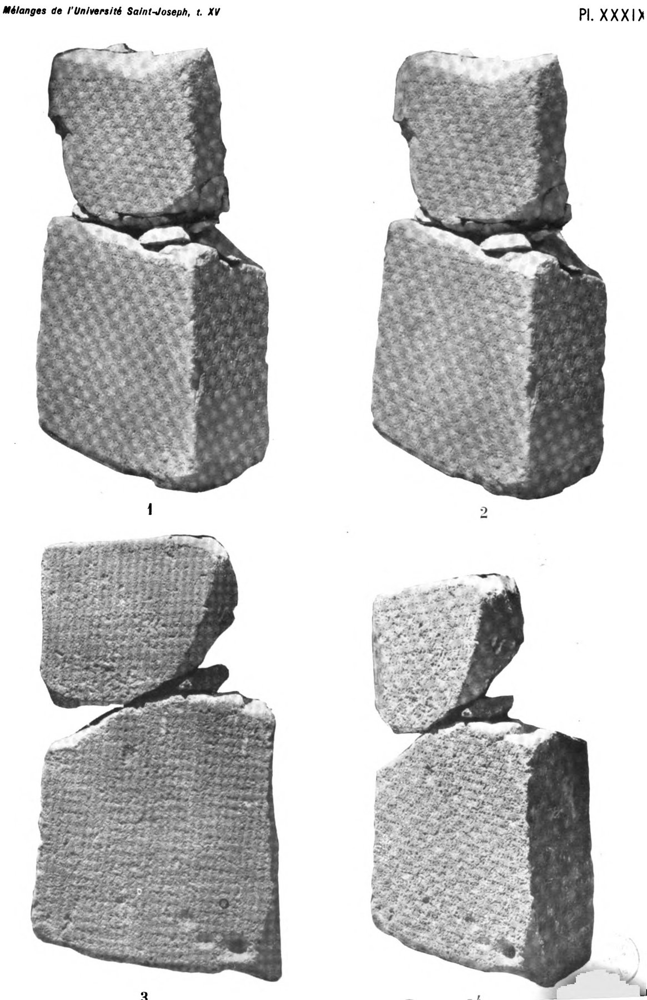

Sefire Treaty Steles

- Find Name
- Sefire Treaty Steles
- Description
- Three 8th-century BC basalt stelae inscribed in Aramaic (KAI 222-224), found near as-Safira (Sefire) near Aleppo, Syria. Sefire I and II were discovered in 1930 and are held in the National Museum of Damascus, each a slab broken in two horizontally with writing on three faces; Sefire III was found in 1956 in nine fragments and is held by the Beirut National Museum. They record treaties between Bar-ga'yah of Ktk and Mati'el, king of Arpad, sealed with blessings and curses including the calf-cutting rite.
- Historical Period
- Iron Age II; 8th century BC
- Evidence Class
- Contextual
- Interpretations
- The steles are described as the best extrabiblical source for West Semitic covenant blessings and curses, illuminating the treaty/covenant form behind biblical covenant passages, including the animal-cutting rite of Genesis 15 and the blessing/curse formulary of Deuteronomy 28. Cautions: the identification of Bar-ga'yah (proposed as an Assyrian king, e.g. Ashurnerari V or Tiglath-Pileser III) is debated, and the parallels are formal and literary, not quotations of the biblical text. A possible fourth stele (KAI 227, 'Starcky Tablet,' Louvre) is a separate item and is not folded into this entry.
- Alternative Names
- Sfire Treaty Steles; Sefire Stelae
- Related Books
- Scripture Illuminated
- Biblical Significance
- The steles show that the covenant-cutting rite and curse formulary of Genesis 15 and Deuteronomy 28 belonged to a real, widely used ancient Near Eastern treaty tradition.
- Artifact Date
- 8th century BC
- Current Location
- National Museum of Damascus (Sefire I, II); National Museum of Beirut (Sefire III)
- Date Discovered
- 1930; 1956
- Discovery Location
- Near as-Safira, Syria
- Timeline Era
- Divided Monarchy
Awaiting Review Not yet checked against scholarly sources. Treat its claims as provisional until this entry is reviewed. About verification
Last reviewed: not yet reviewed